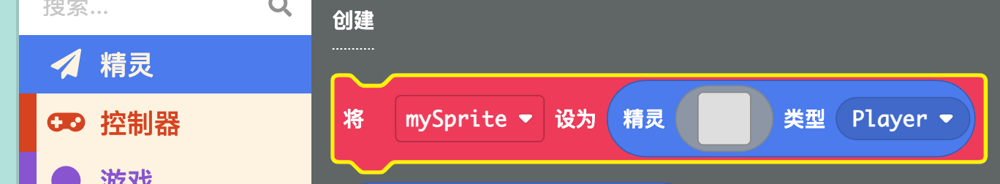
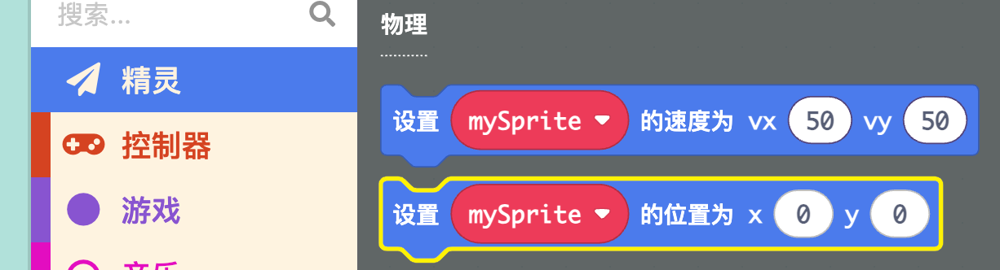
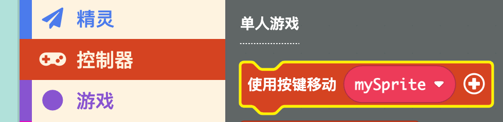
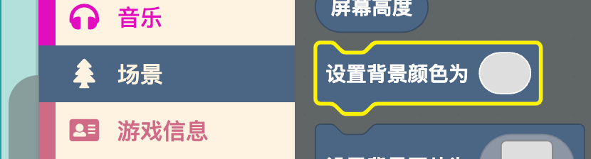
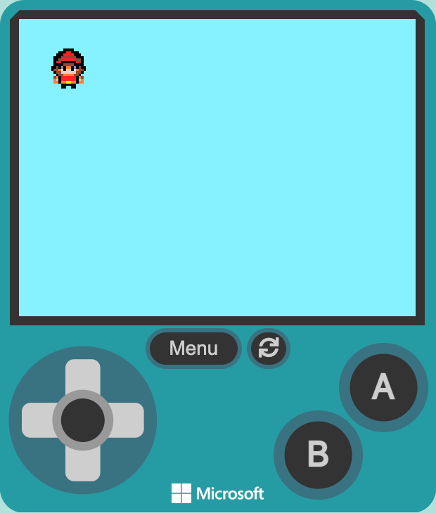
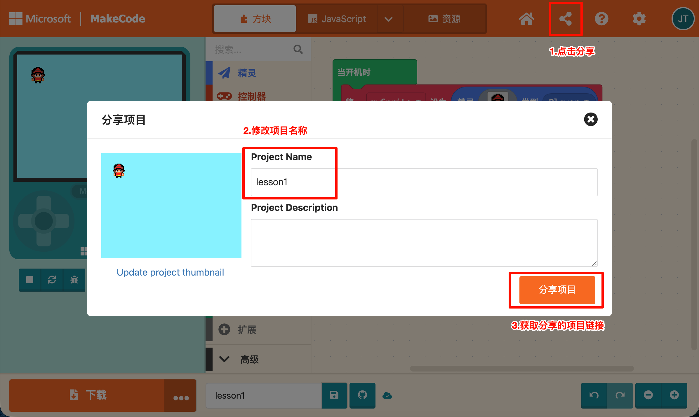

创建你的第一个角色，用方向键控制它自由行走
功能01-角色移动在场景中创建一个玩家角色。
精灵 → 创建 → 将 [变量名] 设为精灵 [图像] 类型 [类型] 到代码区蜗牛
💡 也可以选择图库里的图像后，再进行个性化修改。
用 x/y 坐标让角色出现在屏幕左上角附近。
精灵 → 物理 → 设置 [mySprite] 的位置为 x y 到代码区创建精灵 积木下面mySprite 改成你自己创建的精灵变量名，例如 蜗牛20，y 设为 20
💡 这里设置的是精灵的 x/y 像素坐标，屏幕左上角是 (0, 0)，右下角是 (160, 120)。如果没有创建这个精灵就设置它的位置，会报错哦～
按键盘方向键，角色可以上下左右移动。
控制器 → 单人游戏 → 使用按键移动 [mySprite] 到代码区设置位置 积木下面mySprite 改成你自己创建的精灵变量名，例如 蜗牛vx 和 vy 两个参数vx 和 vy 默认就是 100，可以试试改大一点或改小一点，看看角色移动速度的变化
💡 v 是速度（velocity）的缩写。vx 表示水平方向（左右）的速度，vy 表示垂直方向（上下）的速度。数值越大，角色移动越快。
🧪 点击右侧模拟器，试试用键盘方向键控制精灵移动。
📢 如果按了没反应，看看模拟器按钮是不是灰色的——灰色说明键盘没有聚焦到模拟器上，点击一下模拟器画面再试。
给游戏加一个好看的背景颜色。
场景 → 设置背景颜色为
💡 如果觉得纯色背景太单调，可以看看背景颜色指令下面的 设置背景图片 指令，选择或绘制一张背景图片。
运行游戏，检查效果，调整不满意的地方。
| 参数 | 作用 | 建议 |
|---|---|---|
移动速度 vx/vy | 控制左右/上下移动速度 | 数值越大移动越快，建议 80-150 |
初始位置 x/y | 控制角色出现的位置 | 建议在屏幕范围内 |

把你的游戏分享给老师或同学。

创建精灵 积木是不是放在 当开机时 积木里面设置位置 的 x/y 是不是太大了，角色跑到屏幕外去了（屏幕最大是 160×120）使用按键移动 积木是否连在了 创建精灵 积木下面使用按键移动 里的精灵变量名，和 创建精灵 里的变量名是否一致（比如都是 蜗牛）使用按键移动 积木里的 vx/vy 数值，数值越大移动越快完成基础任务后，可以尝试：
设置 [mySprite] 的图像为 [xx] 指令，配合 当按键 [左/右] 按下 事件，按不同方向键时切换成对应的图像set [mySprite] stay in screen 开 指令（这个指令还是英文的，平台中文化没有完全做好）设置位置 把它放到屏幕右下角音乐、游戏信息、动画）里的指令拖到代码区试试，运行看看会发生什么